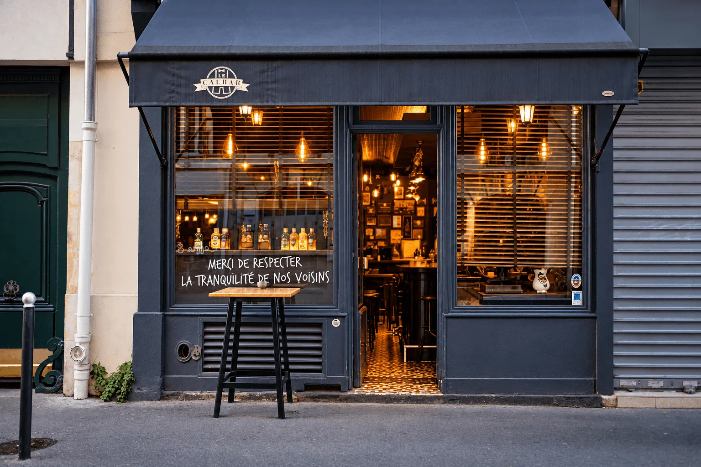
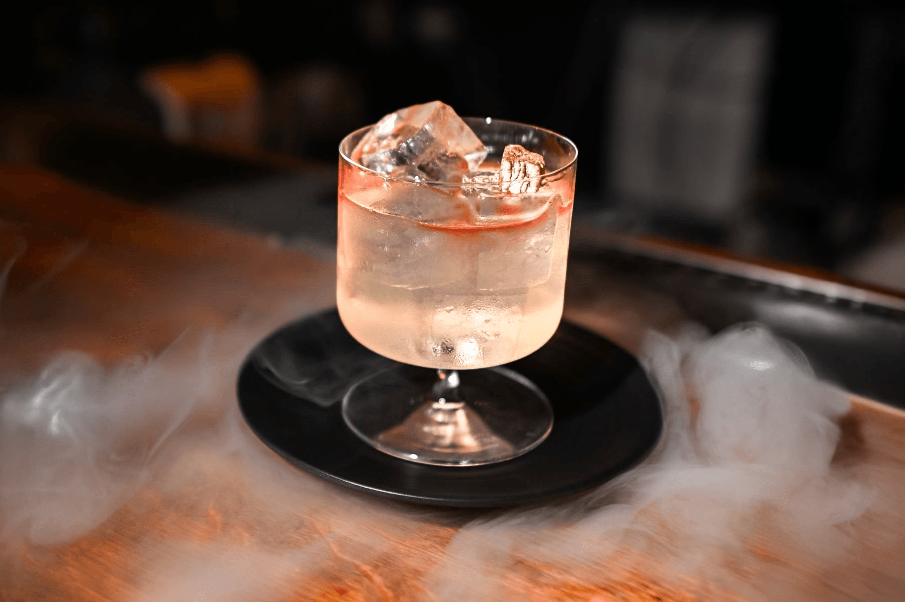
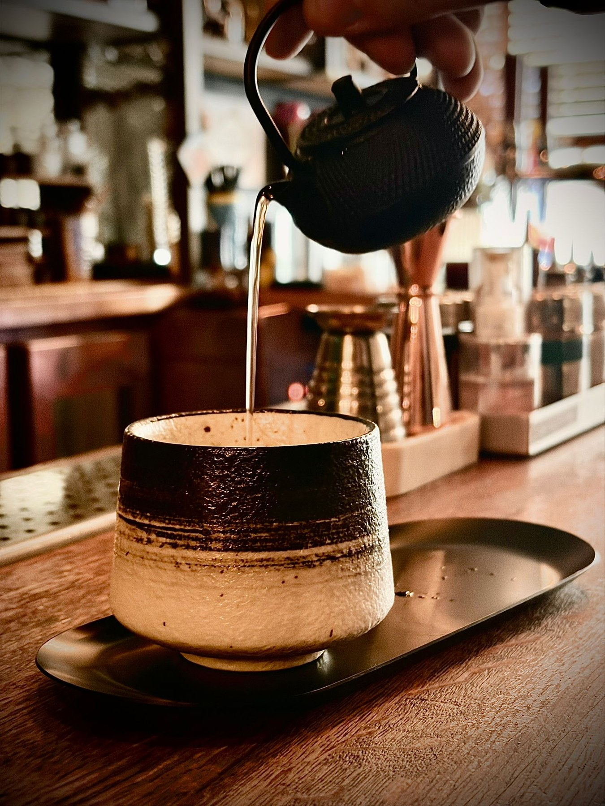
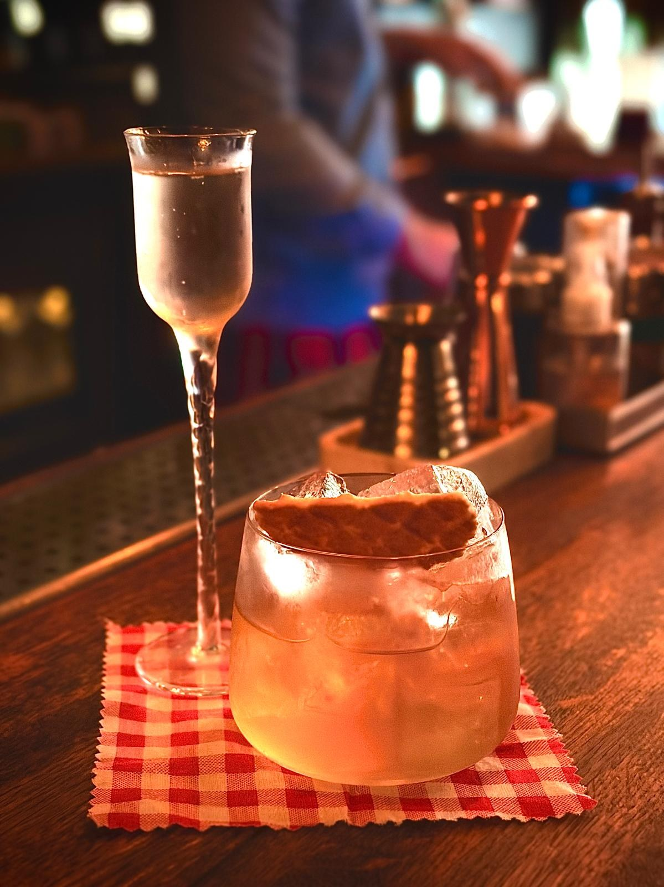
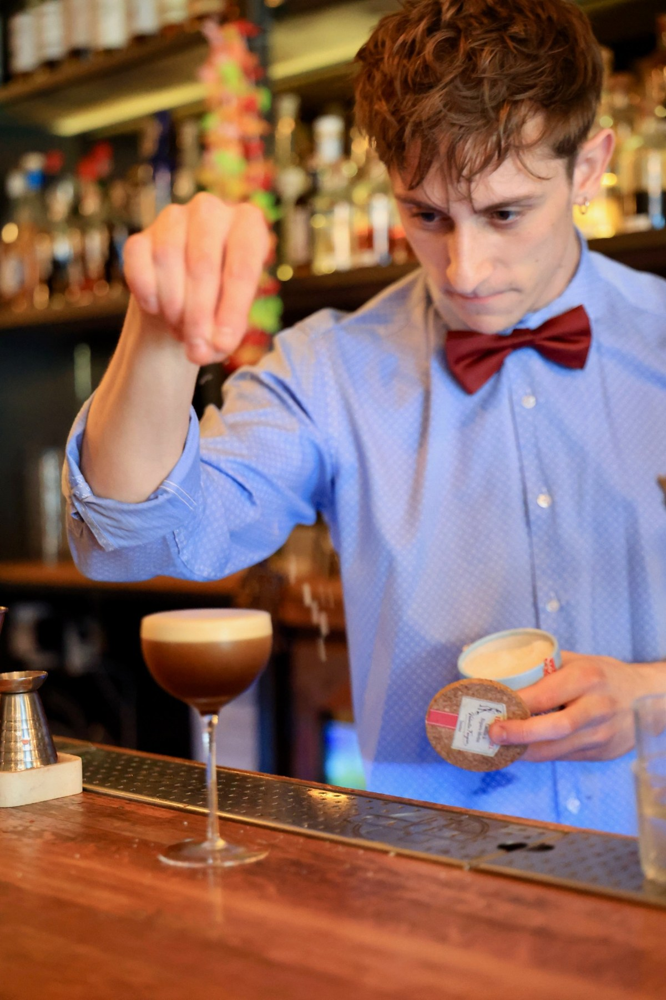

BAR À COCKTAILS · PARIS
BAR À COCKTAILS · PARIS
L’art du cocktail.
L’émotion en plus.
Le geste juste, le goût de l’exception.
LE CALBAR · PARIS 12e
À deux pas
de la Gare de Lyon.
Une ambiance intimiste, des cocktails sur mesure selon vos envies et vos inspirations du moment.
Laissez-vous aussi surprendre par les créations de la carte, préparées par nos barmans en caleçon et nœud papillon.
Du mardi au samedi, 18h à 1h30 Itinéraire



LE SAVOIR-FAIRE
La technique au service
de la sensation.
Trois approches, trois expressions du cocktail.


RENDEZ-VOUS AU CALBAR
Votre prochain moment.
On en parle ?
Une table, un atelier cocktails ou un événement : envoyez votre demande à notre équipe.
Votre réservation sera confirmée après échange avec nous.
EVJF & ATELIERS COCKTAILS
À vous de shaker.
À nous de vous guider.
Pour un EVJF ou un moment entre amis, prenez place derrière le bar et préparez deux cocktails créations avec notre équipe, dans un Calbar privatisé pour votre groupe.
55 €par personne
1 heure2 cocktails créations
4 à 10personnes · bar privatisé
Du mardi au samedi
15h–16h · 16h–17h · 17h–18h

L’ÉVENT BY LE CALBAR
Votre événement.
Notre signature.
Chaque détail compte. Chaque cocktail raconte une histoire.



Cocktails
sur mesure
Créations originales adaptées à votre univers et à vos invités.
Produits
d’exception
Des ingrédients sélectionnés avec exigence pour un rendu incomparable.
Service
haut de gamme
Élégance, discrétion et professionnalisme pour une expérience fluide et mémorable.
Ambiance
unique
Une mise en scène raffinée qui crée l’émotion et marque les esprits.